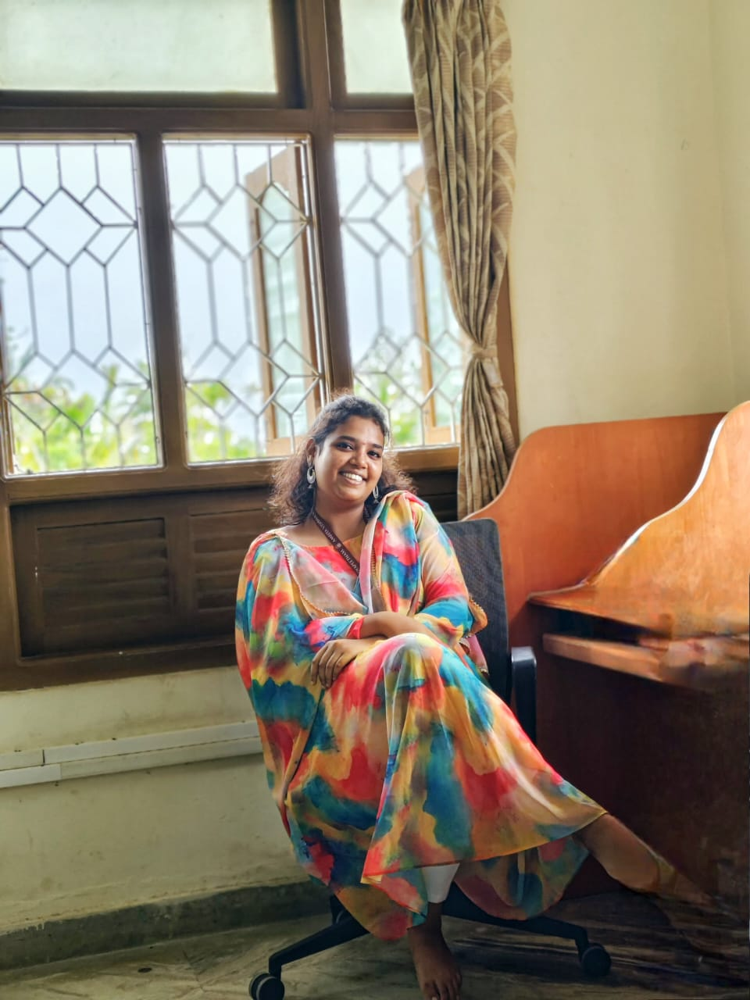

Introduction-
As a passionate and driven computer science engineering student, I'm excited to share my journey and experiences with you.
Currently in my first year of BTech, I'm constantly learning and growing, exploring the vast world of coding, algorithms, and software development.
My curiosity and enthusiasm drive me to stay up-to-date with the latest trends and technologies, and I'm eager to apply my skills to real-world problems.
With a strong foundation in programming languages, data structures, and computer systems, I'm building a solid base for a successful career in tech.
My interests lie in software development, artificial intelligence, and data science, and I'm excited to explore these areas further.
Through my academic pursuits and personal projects, I aim to develop innovative solutions that make a positive impact on society.
I'm always looking for opportunities to learn, grow, and collaborate with like-minded individuals who share my passion for technology and innovation.